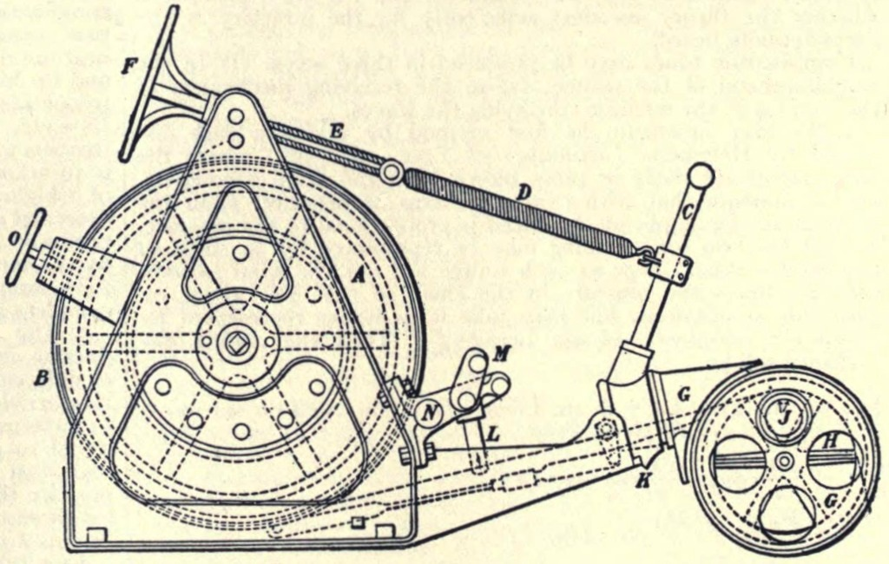

Chapter 7
The Sun Circle and the Sounding Lead
The sounding machine paid out its wire through a hole cut in the pack ice, and the men gathered around the opening watched it descend into black water. The Lucas apparatus clicked steadily, each revolution of the drum marking another fathom of depth in an ocean no ship had ever sounded. The date was 18 April 1915, and the Endurance lay frozen in the Weddell Sea at position 75° 12′ S, 52° 28′ W. The lead dropped through the darkness toward a seafloor no human eye would ever see, and the men waited in silence for the signal that it had found bottom.
This was the first sounding of the day, and it would not be the last. The routine had been established weeks earlier and would continue for months: cut the hole, lower the lead, record the depth, reel in the wire, repeat. The work produced numbers that meant nothing to most of the men aboard. But the numbers accumulated in the navigator’s log, and the log was the record of their existence.

The ship and the mass of pack ice that contained her was still moving, but now swinging towards the west-northwest and increasing in the speed of its drift, moving 130 miles between the start of March and 2 May, when the sun disappeared below the horizon and the dark Antarctic winter began. The men could not feel this motion. They could not see it. But the navigator’s daily positions recorded it with implacable precision. They were drifting toward an uncertain fate, and they were drifting blind.
On 22 February 1915, Endurance had drifted to her most southerly latitude, 76° 58′ S. Thereafter she began moving with the pack in a northerly direction. Two days later, Shackleton realized that they would be held in the ice throughout the winter and ordered ship’s routine reorganized accordingly. The decision marked a transformation. They were no longer explorers attempting a transcontinental crossing. They were inhabitants of a frozen world, and their survival depended on their ability to impose order on that world.
The sounding machine became the ritual center of the new routine. The Lucas apparatus, with its drum of steel wire, had been designed for deep-sea work in open water. Now it served a different function. Each day, the crew cut a hole through the ice—no small task when the pack measured twelve to eighteen feet thick—and lowered the lead into the water below. The wire paid out slowly, the drum turning with a steady clicking that counted the fathoms. When the lead touched bottom, the wire went slack. They had found the seafloor.
These soundings produced more than depth readings. They produced purpose. The Weddell Sea was largely uncharted. Every sounding added to the map, and every map was a small victory against the void. The men were not simply waiting. They were working. They were scientists engaged in a program of discovery, even if that discovery served no practical end. The seafloor they mapped would remain when they were gone, but the act of mapping it gave shape to days that otherwise lacked definition.
The trawl came up from the bottom with mud and the occasional strange creature—a starfish or a worm that had never seen light. The expedition’s biologist examined these specimens, preserved them in jars, labeled them. The work had the quality of a ritual whose meaning had been partially forgotten. But the ritual itself mattered. It provided structure.
Shackleton understood what the polar winter could do to men’s minds. He had been south before, with Scott on the Discovery expedition and on his own Nimrod expedition. The darkness, the cold, the confinement—these were enemies more dangerous than the ice itself. Routine was the weapon against them. He established a schedule that filled every hour with activity, and he enforced it with the combined authority of ship’s captain and expedition commander. The two roles merged into a single presence. He was the Boss.
The meteorological observations ran like clockwork. Every four hours, the observer on duty climbed to the bridge and recorded the readings: temperature, barometric pressure, wind speed and direction, cloud cover. The instruments were standard Admiralty issue, and the procedures followed Royal Navy protocols. The men who took the observations had been trained to do so, and they did it the same way, every time, regardless of conditions. The temperature might be thirty below zero, and the wind might be howling, but the observation was taken at the appointed hour. The numbers went into the log.
The football matches on the floe provided a different kind of structure. On days when the weather permitted, the men played on the flat ice beside the ship. The game was association football, the same game played in parks and stadiums across Britain. The ball was leather, stuffed and laced, and it bounced strangely on the hard ice surface. The players wrapped their boots with strips of fabric to gain traction. They slipped and fell and laughed and got up again. The matches were fierce but friendly, competition without malice. They were also exercise, and Shackleton had ordered that every man exercise daily.
The football pitch was a reminder of the world they had left behind. In London, the FA Cup was being contested. In the trenches of France, a different kind of war was being fought. The men aboard Endurance knew about the war—they had seen the headlines before departing South Georgia—but they could do nothing about it. Their war was with the ice, and that war had not yet begun in earnest. For now, they played football on a frozen sea and pretended that normal life continued.
The blasting of ice with gun-cotton added a more aggressive rhythm to the routine. Shackleton hoped that blasting a channel might free them, or at least create the possibility of movement. The work was dangerous and difficult. The crew drilled holes in the ice, placed charges, and detonated them. The explosions sent cracks radiating through the pack, and the cracks sometimes opened into leads. But the leads closed again, and the ice remained unbroken.
A day’s continual work saw them hack a clear channel 150 yards long. This continued through the following day, and the channel extended another hundred yards. But the ice beyond was thicker still, and the effort required to break it exceeded what the men could sustain. After a week of blasting and cutting, Shackleton called a halt. The ship would not be freed by force. They would have to wait.
The decision to stop blasting was a recognition of reality. The ice was stronger than they were. But it was also a strategic choice. Shackleton had limited supplies of gun-cotton and limited reserves of manpower. He could not afford to waste either on a project that had no chance of success. The men’s energy needed to be directed toward activities that produced results. The soundings produced results. The meteorological observations produced results. The blasting had produced only noise and frustration.
Thomas Orde-Lees, the expedition’s storekeeper, kept a diary that recorded the daily round with particular attention to detail. His entries noted the weather, the work, the meals, the small incidents that made up shipboard life. He wrote about the food—seal meat and penguin steaks, tinned soups and biscuits, tea and cocoa. He wrote about the cold—how it felt, what it did to exposed skin, how the men protected themselves against it. He wrote about his companions—their habits, their moods, their strengths and weaknesses. His diary was a chronicle of the ordinary, and that ordinariness was the point.
The food was adequate but monotonous. The expedition had provisioned for the transcontinental crossing, which meant they had supplies intended for men working hard in extreme conditions. Now they were not crossing anything. They were waiting. The rationing reflected this new reality. Shackleton reduced portions to make the supplies last. The men grumbled but accepted it.
The seal and penguin meat came from hunting expeditions on the ice. The animals were plentiful, at least at first, and the hunting provided both food and activity. The men who went out to kill seals came back with blood on their clothes and meat on their shoulders. They also came back with stories—the seal that got away, the penguin that stood its ground, the leopard seal that surfaced through a crack in the ice. The stories circulated through the mess, adding to the expedition’s folklore.
The hunting also reinforced the expedition’s relationship with its environment. The ice was not just a prison. It was also a resource. The animals that lived on it and in it were food. The ice itself was a platform, a foundation, a surface that could be walked on and worked on. The men learned to read it—the color of the ice, the texture of the surface, the sound it made underfoot. They learned which patches were safe and which concealed danger.
But survival was not enough. Shackleton knew that morale required more than mere survival. It required hope. The sun circle—the annual pattern of light and darkness—provided a framework for that hope. The sun had disappeared on 2 May, and it would not return until August. The men marked the days. They counted the weeks. They calculated when the light would come back, and when the light came back, the ice might begin to break up, and when the ice broke up, they might be free.
The calculation was not realistic. The Weddell Sea ice did not necessarily break up in spring. It might simply refreeze around them and hold them for another year. Or it might crush the ship before spring arrived. The future was unknown, and the unknown was terrifying. But Shackleton did not permit terror. He permitted only cautious optimism. The men were told that they would get out. The Boss said so.
This managed distribution of forward-looking optimism kept the expedition functional. Hope was a resource, like food or fuel, and it had to be rationed. Too much hope led to disappointment, and disappointment led to despair. Too little hope led to resignation, and resignation led to death. Shackleton walked the line between these extremes with the same care he took when walking on the ice. He watched his men, and he gave them what they needed.
The expedition’s scientific program provided another form of hope. The work they were doing would contribute to human knowledge. The soundings, the trawls, the meteorological observations—all of it had value beyond the immediate needs of the expedition. When they returned, they would bring back data that scientists could study for years. The expedition would not be a failure, even if it never reached the Pole. It would be a contribution.
The scientists aboard—James Wordie, the geologist; Leonard Hussey, the meteorologist—understood this. They worked steadily at their specialties, examining specimens, analyzing samples, preparing reports. Their work had the quality of a normal scientific expedition, even though the expedition itself was anything but normal. The laboratory spaces aboard the ship were cramped and cold, but they were functional.
The ship herself became a character in the expedition’s story. Endurance was a three-masted barkentine, built in Norway for polar work. Her hull was of oak, greenheart, and other hardwoods, designed to withstand the pressure of the ice. She was not designed to withstand indefinite pressure, but she had held so far. The men listened to her sounds—the creaking of her timbers, the groaning of her frame—and tried to interpret what they heard.
Shackleton walked the ship daily, checking her condition, talking to the men, maintaining his presence. He was visible, accessible, confident. He ate in the wardroom with the officers and scientists, and he visited the forecastle where the seamen and firemen made their quarters. He knew every man’s name, every man’s background, every man’s strengths and weaknesses. He had selected them for the expedition, and he took responsibility for them.
The officers formed the core of the expedition’s leadership structure. Frank Worsley, the captain, was responsible for navigation and ship operations. He was a New Zealander with a background in merchant shipping, and his skills as a navigator would prove crucial. Frank Wild, the second-in-command, was a veteran of Antarctic exploration who had been with Shackleton on the Nimrod expedition. He was steady, reliable, and respected by the men. Tom Crean, the second officer, was another veteran, having served with Scott on both the Discovery and Terra Nova expeditions.
The seamen and firemen formed the rank and file. They were mostly British, with a few Irish and a handful of other nationalities. They were experienced sailors, accustomed to hard work and harsh conditions. They had signed on for adventure, and they were getting more adventure than they had bargained for. But they adapted.
The scientific staff occupied a middle position. They were gentlemen, in the terminology of the time, but they were not naval officers. Their status was defined by their expertise, not by their rank. They worked alongside the sailors when necessary, and they ate in the wardroom with the officers. The social boundaries were clear, but they were not rigid. The expedition was a small community, and everyone knew everyone else.
The community had its tensions. Orde-Lees, the storekeeper, was not universally popular. His diary reveals a man who was observant, critical, and somewhat superior. He noted the failings of others with evident satisfaction. He also noted his own discomforts and complaints. He was not a natural member of a team, and he knew it. But he did his job.
The dogs added another dimension to the expedition’s life. The expedition had brought nearly seventy dogs, primarily Canadian sled dogs, for the transcontinental crossing. They were housed in kennels on deck and on the ice beside the ship. They were loud, energetic, and constantly hungry. Their care and feeding was a daily task, and the men assigned to it developed relationships with the animals. Some men loved the dogs. Some men hated them. All of them recognized that the dogs were essential to any future sledging.
The dogs also provided entertainment. The men watched them, played with them, bet on their fights. The dogs fought among themselves, establishing a hierarchy that paralleled the human one. The strongest dogs dominated the weakest. The weakest submitted or got hurt.
The routine continued through April and into May. The temperature dropped. The darkness deepened. The wind howled across the ice, and the ship groaned in response. But the routine held. The observations were taken. The soundings were made. The football matches were played when weather permitted. The meals were served. The watches were stood.
On 14 April, Shackleton recorded the nearby pack “piling and rafting against the masses of ice.” He noted that if the ship was caught in this disturbance, “she would be crushed like an eggshell.” The observation was a reminder of the danger that surrounded them. The ice was not static. It moved, it pressed, it ground against itself. The forces at work were immense, and the ship was small.
But the disturbance passed. The ice settled. The routine resumed.
The expedition had entered a period of suspended animation. They were moving, but they were not going anywhere. They were working, but they were not accomplishing their original purpose. They were surviving, but they were not living. The days blurred together, one indistinguishable from the next. The only markers were the observations, the meals, the watches. The structure held them together, but it also confined them.
The Weddell Sea Gyre carried them north and west. The drift was imperceptible to those aboard, but the navigator’s calculations showed it clearly. They were moving away from their intended landing point at Vahsel Bay. They were moving away from any hope of rescue. They were moving into an unknown future.
Shackleton understood this better than anyone. He studied the drift patterns, calculated their position, projected their trajectory. He knew that the ice might carry them for months, or it might carry them for years. He knew that the ship might hold, or it might not. He knew that the supplies might last, or they might run out. He knew nothing for certain except that they had to keep going.
The routine was his answer to uncertainty. As long as the routine continued, the expedition continued. The routine was the expedition. Without it, they were just men waiting to die.
The football matches on the floe continued through April, though they became less frequent as the weather worsened. The last game was played in early May, just before the sun disappeared. After that, the darkness made outdoor sports impossible. The men shifted their recreation to the ship’s interior. They played cards, they read books, they put on entertainments. The “Ritz,” as they called the space below decks where they gathered, became their theater, their concert hall, their social club.
Hurley, the photographer, documented the expedition’s life with his camera. He took photographs of the ship, the ice, the men, the dogs. His images captured the strange beauty of their surroundings—the blue glow of the ice, the white expanse of the floes, the dark silhouette of the ship against the polar twilight. His photographs would later become famous, but at the time they were simply another activity, another way of filling the hours.
The ice surrounding the ship changed as the winter progressed. The open leads that had appeared in summer closed up. The pressure ridges that had formed during the autumn storms smoothed out. The ice became a solid, uniform mass, extending to the horizon in every direction. It was beautiful and terrible, a white prison that held them fast.
The men adapted to the cold. They learned to dress for it, layer upon layer of wool and fur. They learned to move quickly when they went outside, to minimize exposure. They learned to sleep in cold compartments, their breath freezing on the blankets above their heads. They learned to live in a world where warmth was a luxury and comfort was a memory.
The expedition’s medical officer, Alexander Macklin, monitored the men’s health. He treated the minor ailments that arose—colds, strains, cuts and bruises. He also watched for signs of psychological strain, the depression and anxiety that could accompany prolonged isolation and darkness. He found little to worry about. The men were in good spirits, all things considered. The routine was working.
But the routine could not last forever. The ice was not a passive prison. It was an active force, and it was gathering strength. The pressure that had been building through the autumn would continue to build through the winter. The ship that had held so far might not hold much longer.
Shackleton knew this, even if he did not say it. He watched the ice, listened to the ship, calculated the risks. He made contingency plans, though he shared them with no one. He prepared for the worst while hoping for the best.
The men sensed something, even if they could not name it. The routine had become too routine. The days had become too similar. The sameness that had been comforting now seemed ominous. They were waiting for something to happen.
On 2 May, the sun disappeared below the horizon. The long Antarctic night had begun. For the next three months, the expedition would live in darkness. The only light would come from the ship’s lamps, from the moon and stars when the clouds parted, from the aurora australis when it danced across the southern sky.
The darkness brought a strange kind of peace. The world contracted to the ship, and the ship contracted to the spaces below deck. The men huddled together in the warmth of the Ritz, telling stories, singing songs, playing games. The outside world ceased to exist. There was only the ship, and the ice, and the darkness.
The routine continued through May, June, July. The observations were taken. The meals were served. The watches were stood. The days passed without incident, without change. The expedition existed in a state of suspended animation, waiting for something to break the stasis.
In the darkness, the men heard sounds that they had not heard before. The ice groaned. The ship creaked. The timbers shifted in their frames. The sounds were faint, barely audible, but they were there. The ice was speaking. The men did not yet understand what it was saying.
The temperature dropped. The barometer fell. The wind picked up. The ice began to move, not with the slow drift of the gyre, but with a more urgent motion. The pressure was building. The pressure ridges were forming.
Shackleton stood on the bridge, listening. He had heard these sounds before, on other expeditions, in other circumstances. He knew what they might mean. He did not share his knowledge with the men. There was no point in alarming them yet. The sounds might be nothing. The sounds might be the beginning of the end.
The routine continued. The observations were taken. The meals were served. The watches were stood. But the routine was now a performance, a pretense that everything was normal when everything was not normal. The ice was speaking, and the men were beginning to listen.
The first serious groan came in the darkness of early August. It was a sound unlike any they had heard before—a deep, resonant cracking that seemed to come from everywhere at once. The men stopped what they were doing. They looked at each other. They waited for the next sound.
It came. And then another. And then another. The ice was moving. The pressure was building. The ship was being tested.
Shackleton went below. He walked through the ship, checking the hull, talking to the men, projecting calm. But his eyes were watchful. The long peace was ending. The ice was no longer a passive prison. It was an active, speaking force, and it was telling them that their time was running out.